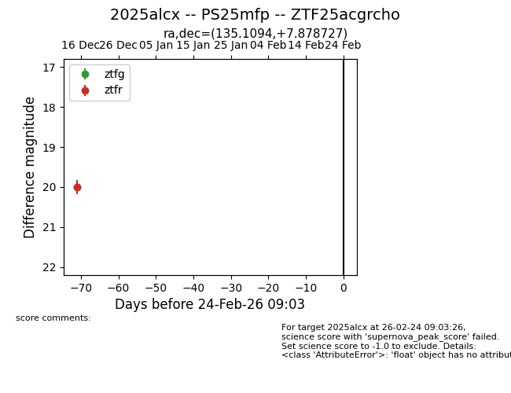
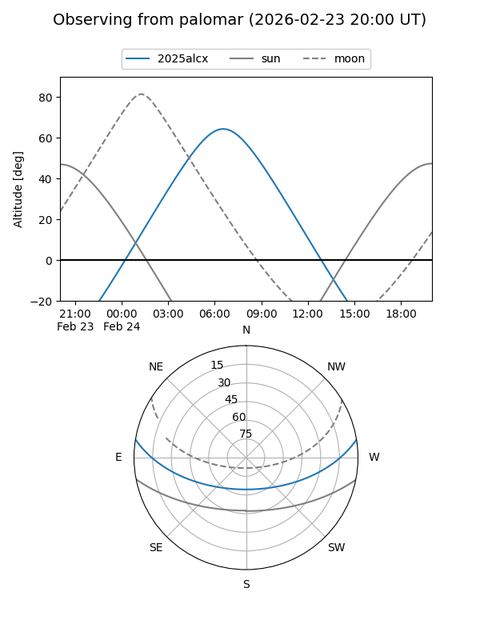

2025alcx
Target 2025alcx at 2026-01-06 11:06
Aliases and brokers:
FINK:
Lasair:
ALeRCE:
TNS:
YSE:
alt names
ZTF25acgrcho (ztf,fink_ztf)
2025alcx (tns,yse)
PS25mfp (panstarrs)
Coordinates:
equatorial (ra, dec) = 135.1094,+7.87873
equatorial (HMS+DMS) = 09:00:26.26,+07:52:43.42
galactic (l, b) = (221.0183,+32.20375)
Flags:
Photometry:
last ztfg=19.99, ztfr=20.00
1 ztfg, 1 ztfr detections
Lightcurve

Visibility


Additional plots